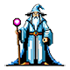
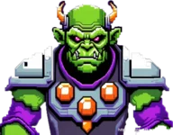
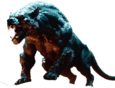
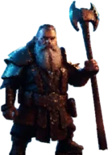
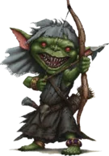
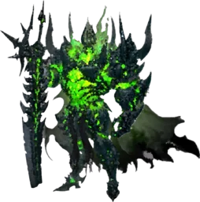
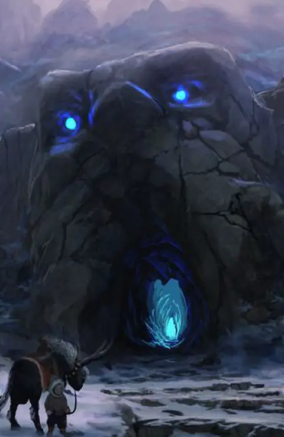
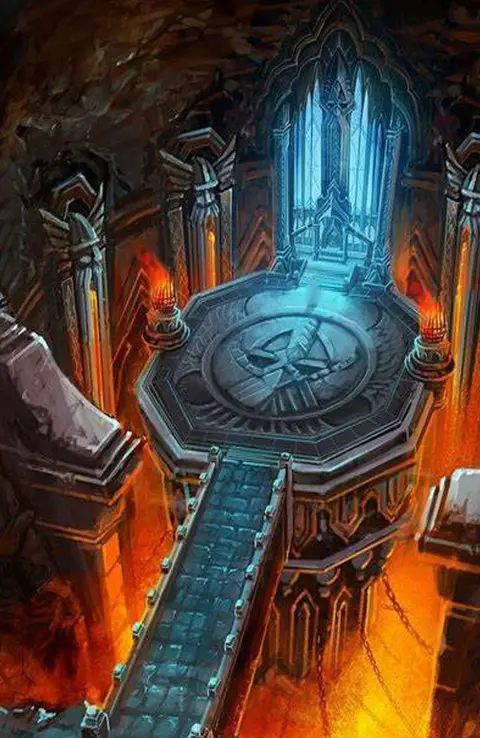

New Orc
Invasion
Un jeu de tir à la Space Invaders, chez les orcs du Seigneur des Anneaux. Premier chapitre : cinq niveaux, des boss, un compte joueur pour garder son meilleur score.
À droite, une mini-démo web que j'ai refaite avec les vrais sprites du dépôt. Ce n'est pas le jeu pygame lui-même.
- S
- démarrer
- ← →
- se déplacer
- Espace
- tirer
Le héros et ses ennemis
Chaque créature est une classe dans enemy.py (le héros, lui, est dans player.py). Images extraites telles quelles du dépôt, réduites pour le web.

Le magicienplayer.py
OrcEnemyBoss
WargEnemyWargBossWarg
NainEnemyDwarfBossDwarf
GobelinEnemyGobelinArcherEnemyGobelinMassue
BalrogBossBalrog
Cinq niveaux, cinq décors
Les niveaux alternent ennemis variés et boss : orcs, wargs, nains, gobelins, puis le balrog. Dialogues, bonus et sons accompagnent le tout. Voici les cinq fonds du dépôt.
- Niveau 1
fondlvl1.jpg - Niveau 2
fondlvl2.png 
Niveau 3fondlvl3.png- Niveau 4
fondlvl4.png 
Niveau 5fondlvl5.png
Une explosion en 46 images
Le dossier anime/explose/ contient explose1.png à explose46.png. Le jeu les enchaîne pour détruire un ennemi. Ici elles sont regroupées dans une planche ; faites glisser le curseur pour avancer image par image.
Comment c'est construit
Du Python découpé par rôle. pygame fait la boucle de jeu, les sprites et le son ; Tkinter et Pillow gèrent l'inscription et la connexion ; SQLite garde les comptes et les meilleurs scores, avec des mots de passe hachés par bcrypt.
enemy.py36levellogic.py31projectiles.py20maingame.py17bonus.py9testsqlite.py7login.py6player.py2
Du lancement à la partie
testsqlite.pypoint de lancement indiqué par le README, base SQLite et bcryptlogin.pyfenêtres Tkinter : connexion ou inscriptionlevellogic.pyfonctionrun_game, enchaîne les niveauxmaingame.pyclasseGame: joueur, ennemis, bonus, sons
Ordre déduit des imports. Le dépôt contient aussi path_dos2nix.sh, un correctif pour les chemins avec crochets sous Linux et macOS.
Tableau des scores
Décoratif : les noms et les scores sont inventés. Le vrai jeu enregistre le meilleur score de chaque compte dans SQLite. Ici, rien n'est stocké : votre score de la démo apparaît seulement jusqu'à la fermeture de la page.
| Rang | Joueur | Score |
|---|---|---|
| 1 | Aragorn-Fan | 12 400 |
| 2 | Pippin | 9 850 |
| 3 | Sam | 7 120 |
| 4 | Merry | 4 300 |
| 5 | Gollum | 990 |
À savoir
- Les images viennent du dépôt
theido74/neworcinvasion(dossiersimage/,anime/explose/). Je les ai seulement redimensionnées et compressées. - L'univers du Seigneur des Anneaux appartient à ses ayants droit : c'est un projet de passion, sans visée commerciale.
- La démo reprend les commandes du README (S, flèches, espace) mais ses niveaux, son équilibrage et son code sont simplifiés. Pas de son.
- Le README du dépôt est en anglais et invite à envoyer des retours.